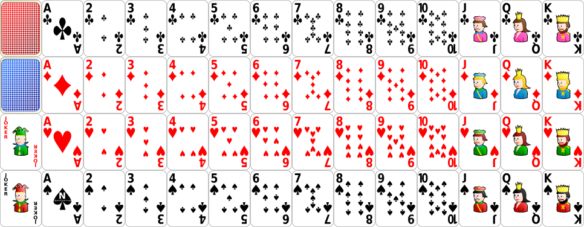

Jap Jap !
English
|
Français
Scores :
Vous :
0
| Adversaire :
0
Cliquez sur DISTRIBUER pour commencer le jeu !

DISTRIBUER
JAP JAP!
Comment jouer :
Sélectionnez une ou plusieurs cartes de votre main (elles doivent être de même rang ou former une séquence consécutive de même couleur)
Cliquez sur le paquet pour piocher une carte cachée, ou cliquez sur la défausse pour prendre la carte visible du dessus
Criez "JAP JAP !" lorsque la valeur de votre main est de 5 ou moins pour gagner la manche
Le premier à atteindre 90 points perd la partie !